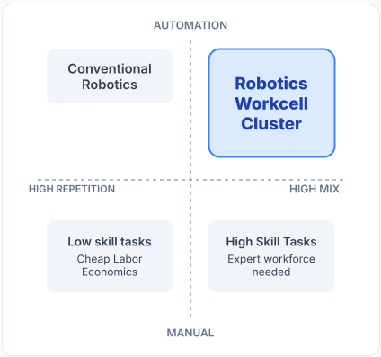

Robotics Workcell Cluster
Vision: Automated high-mix manufacturing accomplished through generative multi-robot-arm cooperative manipulation

The workcells within the Robotics Workcell Cluster (RWC) provide a platform for researchers to develop and integrate robot skills that enable teams of autonomous agents to accomplish collaborative tasks intelligently in dynamic environments. The projects focuses on building safe, scalable, and efficient robotic systems that can measure uncertainty and work across different robot brands. The tools should transfer to new tasks, support real manufacturing needs, and be shared as open-source utilities for others to use.
Technical Themes
Coordinated robotic skill execution
Fault detection and automatic recovery
Collaborative multi-robot systems
Optimization factors (e.g., assembly time, robot-arm utilization, other)
Spatially aware virtualization for mixed reality
Fine-grained manipulation with multi-modal sensing (audio, tactile, eye-in-hand, force-torque)
Context-driven learning with foundational models
Foundation Planning Model
Foundation Perception Models
Grounded Skill Controllers and Perception